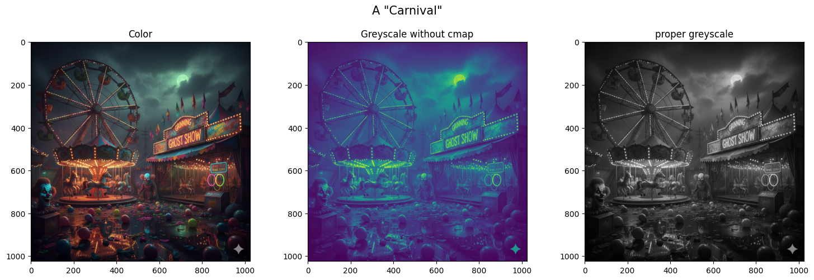

# Image stuff
import matplotlib.pyplot as plt
from PIL import Image
image_name = 'notHappyCarnival.jpg'
img = Image.open(image_name)
fig, axs = plt.subplots(1, 3, figsize=(15, 5))
axs[0].imshow(img)
axs[1].imshow(img.convert("L")) # Don't forget the cmap
#(This convert is not how you will do it for the project)
axs[2].imshow(img.convert("L"), cmap='gray')
fig.suptitle('A "Carnival"', fontsize=15)
axs[0].set_title('Color')
axs[1].set_title('Greyscale without cmap')
axs[2].set_title('proper greyscale')
plt.tight_layout(rect=[0, 0.03, 1, 0.95])
#plt.tight_layout()
plt.show()

#more Image fun- split color and greyscale
from PIL import Image
import numpy as np
import matplotlib.pyplot as plt
image_name = 'notHappyCarnival.jpg'
img_col = Image.open(image_name)
img_gry = img_col.convert("L")
width, height = img_col.size
#integer division with // (whole number at the end no matter what)
#5/2 = 2.5, 5//2 = 2
split_point = width // 2
left_half_col = np.array(img_col.crop((0, 0, split_point, height)))
right_half_gry = np.array(img_gry.crop((split_point, 0, width, height)))
#Stacking is like appending, just with full arrays instead
right_half_gry_stack = np.stack([right_half_gry] * 3, axis=2)
#horizontal stack, adds to each row instead of the end
final_image = np.hstack((left_half_col, right_half_gry_stack))
plt.figure(figsize=(12, 6))
plt.imshow(final_image)
plt.title("Color/Grayscale Split Image")
plt.axis('off')
plt.show()

# You can split images without the image library too
# (like for your project and work with the pixels individually)
img = plt.imread(file_name)
#check if image formatting is correct
# if the img.dtype is not np.float32 and/or img.dtype is not np.float64
# Take the rgb values from 0-255 to 0-1
#find the middle of the image with img.shape
height, width, channels = img.shape
#split the image in half
left_half_color = img[:, :split_point, :] #notice the colon location in the middle
right_half_color = img[:, split_point:, :]
#How do we calcualte luminance?
#L = ____*R + ___*G + ___*B
#Might be worth storing the rgb weigts in an array... (np array will make math faster)
#grayscale_weights = np.array([r,g,b])
#combine in single scalr with dot prodcut
#Can np do that for us?
#luminance = np. ...
#Once you have a luminance for each pixel, stack it 3x so each rgb pixel has instructions
right_half_grey = np.stack([luminance] * 3, axis=2)
#Stack the color and grey image next to eachother
final_image = np.hstack((left_half_color, right_half_grey))
---------------------------------------------------------------------------
NameError Traceback (most recent call last)
Cell In[3], line 4
1 # You can split images without the image library too
2 # (like for your project and work with the pixels individually)
----> 4 img = plt.imread(file_name)
6 #check if image formatting is correct
7
8 # if the img.dtype is not np.float32 and/or img.dtype is not np.float64
9 # Take the rgb values from 0-255 to 0-1
10
11 #find the middle of the image with img.shape
12 height, width, channels = img.shape
NameError: name 'file_name' is not defined